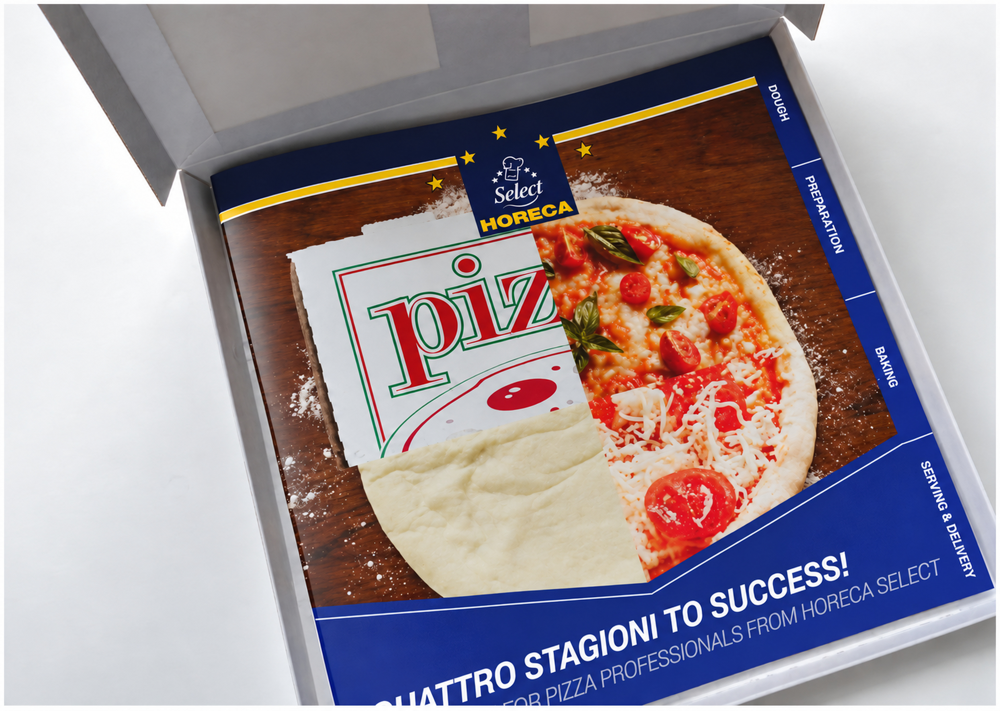
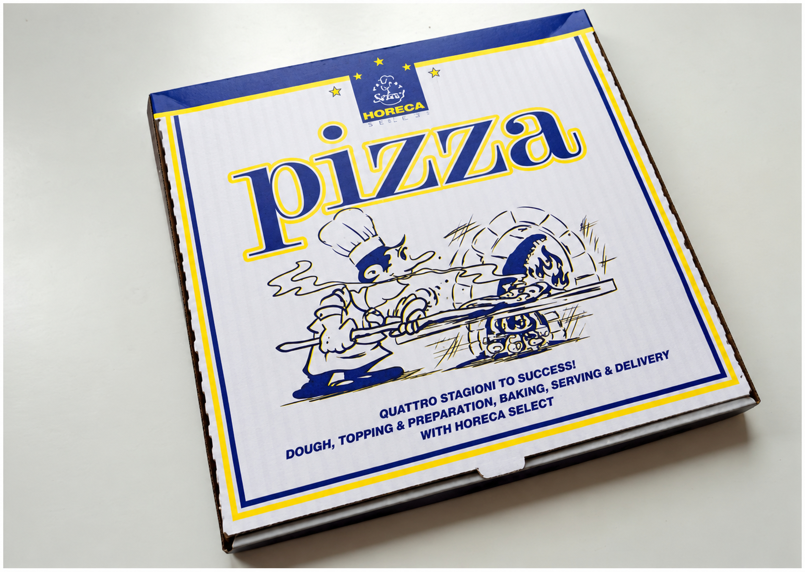
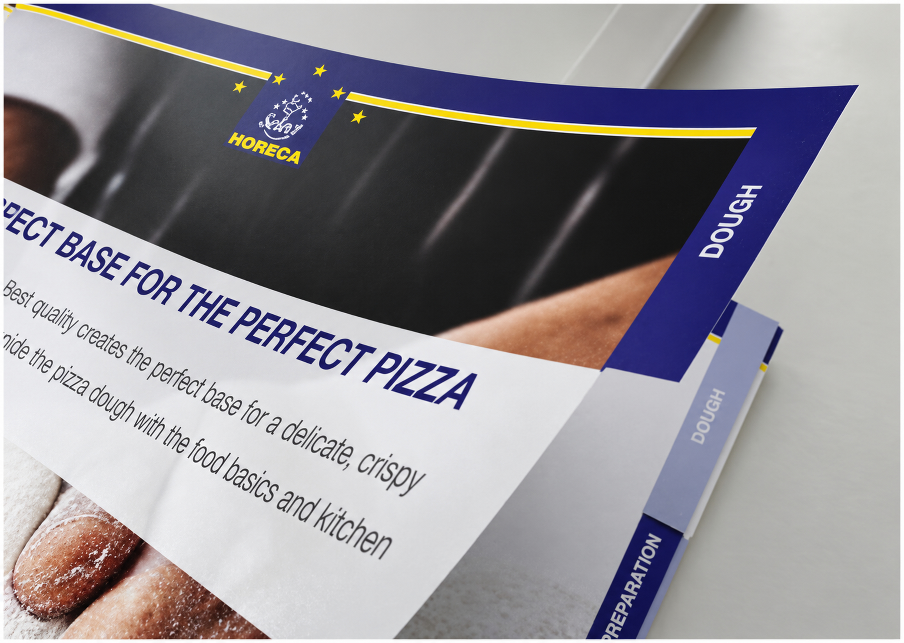
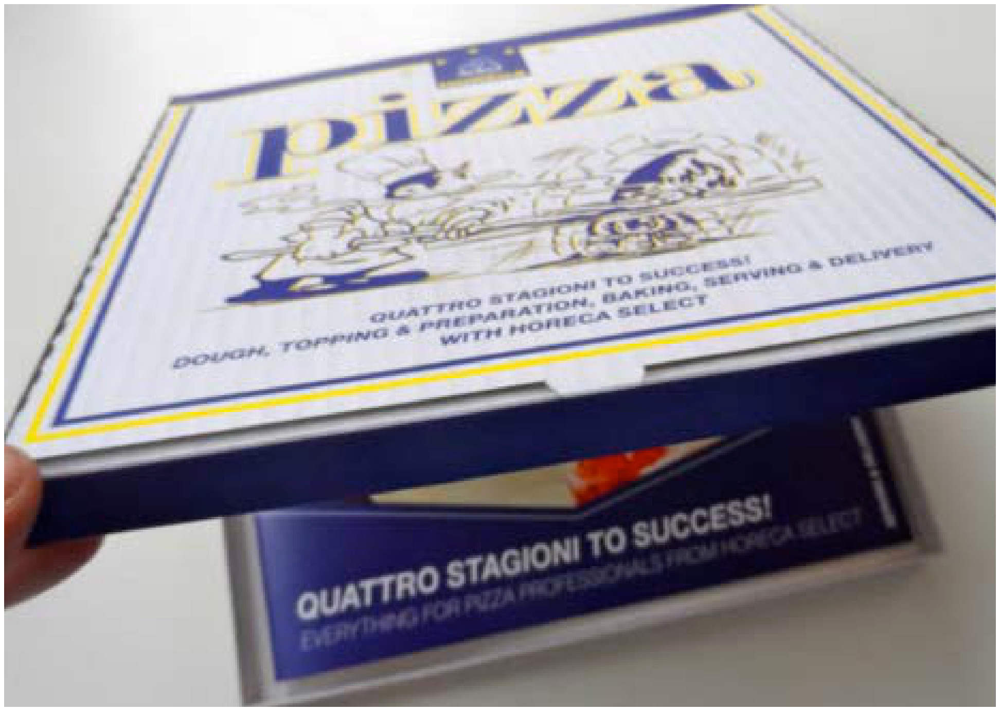

Task
Showcase the assortment for pizza businesses and delivery services, and encourage these business customers to shop at METRO as part of a dedicated promotional action.
METRO / HORECA
A special promotion for pizza businesses and delivery services — presenting METRO’s relevant assortment in a brochure inside a pizza box.

Task
Showcase the assortment for pizza businesses and delivery services, and encourage these business customers to shop at METRO as part of a dedicated promotional action.
My contribution
As Senior Art Director at Liquid Campaign, I was responsible for the visual look and campaign development, translating the promotional offer into a clear, distinctive piece of communication.
In practice
The brochure was presented inside a pizza box, connecting the format directly to the audience’s everyday business. Familiar on the outside, informative on the inside.
The pizza box, the brochure inside and selected design details.



Next project
Audi